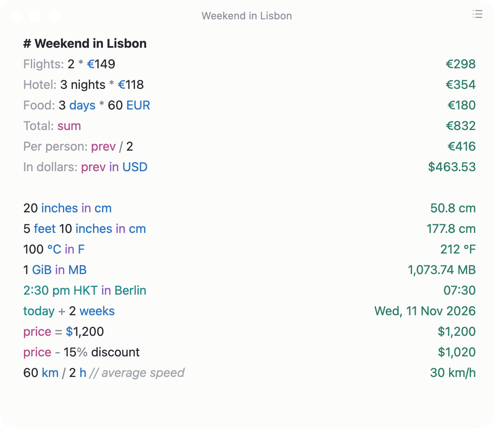
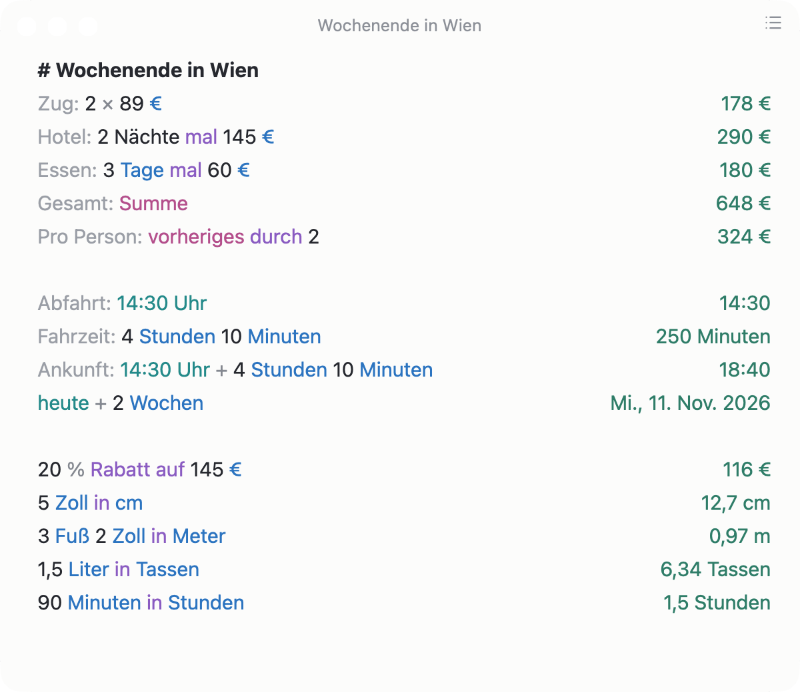
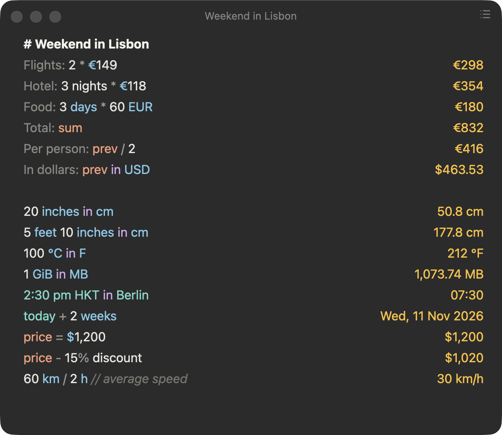
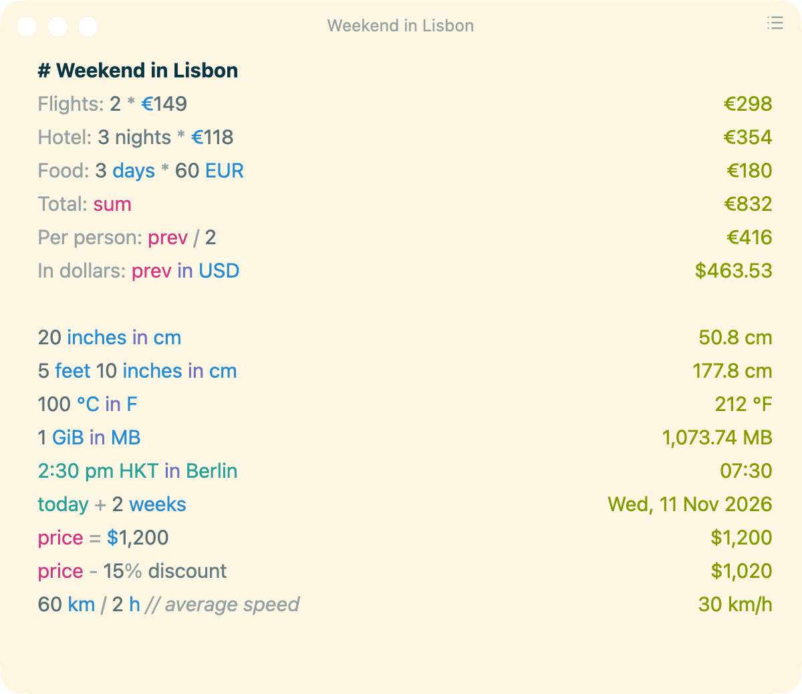
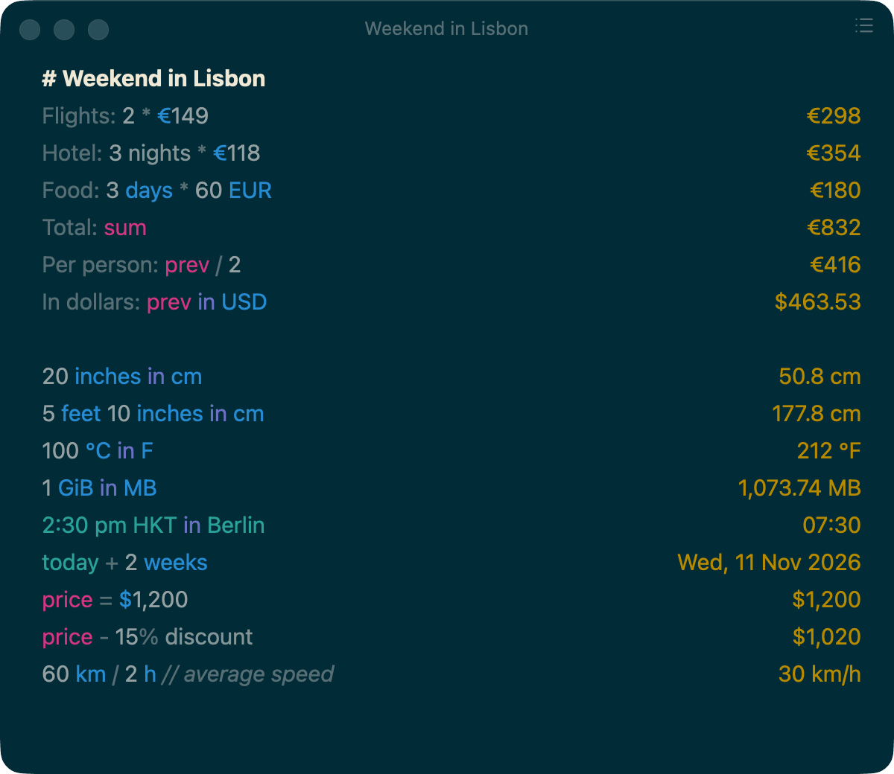

Plain words
Operators as symbols or words, implicit multiplication, scales like k and M, hex, binary and octal, and functions from sqrt to tanh.
- 8 times 9
- 72
- $50 without 10%
- $45
- 2(3+4)
- 14
- $2k
- $2,000
- sqrt 16 + 3^2
- 13
- 0o1435343 in hex
- 0x63AE3
Napkin is a calculator notepad for macOS. Write the math in plain words on the left; the answer appears on the right of the same line. It is free and open source.

Every line is calculated as you type, and its result sits at the right edge of the same line. In the app, click a result to copy it.
Every result on this page was calculated by Napkin itself.
Operators as symbols or words, implicit multiplication, scales like k and M, hex, binary and octal, and functions from sqrt to tanh.
Length, area, volume, weight, time, temperature, angles and data, with every SI prefix. Mixed units add up, and CSS px, pt and em convert with an em and ppi you can set.
About 160 currencies and 40 crypto tickers, by code, name or sign. Rates refresh in the background and stay cached, so conversions work offline too.
Example results with the rates of 28 October 2026.
All the usual forms: of, on, off, as a % of, and the reverse questions like of what is.
Date math, durations, and time zones by city, IANA name or abbreviation, each following its daylight-saving rules. now, today + 2 weeks and New York time work too.
Headers, labels, // comments and variables. prev is the last result above; sum and avg cover the lines since the last header or blank line. Words Napkin doesn't know are ignored.
Notes are plain .numi files. Point the notes folder at iCloud Drive or Dropbox to sync them; ⌘L searches them all.
Pick one in Settings or let Napkin follow your system language: its words are understood on top of English, and unit names and dates come back in that language.

A native Mac app that stays out of the way, a command line tool for everything else, and JavaScript extensions.
System (follows light and dark mode), Light, Dark, Amber, Solarized Light and Solarized Dark. Font, font size, precision, number style, angle unit and clock format are settings too.



Press the hotkey anywhere to show or hide Napkin. The menu bar icon does the same.
Add your own units, functions and variables with a few lines of JavaScript.
numi.addUnit({
id: "horse", phrases: "horse, horses, hrs",
baseUnitId: "m", format: "hrs", ratio: 2.4,
});
numi.addFunction({ id: "zum", phrases: "zum" }, (values) => ({
double: values[0].double + values[1].double,
}));The same engine as a command: one expression, a whole .numi file, or JSON for scripts.
$ napkin "20 inches in cm"
50.8 cm
$ napkin --language de "5 Zoll in cm"
12.7 cm
$ napkin --json "60 km / 2 h"
{"input":"60 km / 2 h","result":{"text":"30 km/h","number":30.0,"unit":"km/h"},"error":null}Napkin comes with an Alfred workflow, and napkin serve answers calculations over a local HTTP endpoint without the app.
MIT licensed and developed in the open. Napkin is a native app built with Rust and GPUI, the GPU-accelerated UI framework behind the Zed editor.
napkin-core the calculation engine, no I/Onapkin-rates exchange rates and their cachenapkin-extensions the JavaScript host for extensionsnapkin-cli the napkin commandnapkin-app the desktop appNapkin is an independent app, but it is compatible with Numi, so what you have keeps working:
prev, sum, avg.numi filesnumi.addUnit, numi.addFunction, numi.setVariable) runs unchanged, also from Numi's extension folderslocalhost:15055For macOS 11 or later. One download runs natively on Apple Silicon and Intel.
Get Napkin-<version>.dmg from the latest release on GitHub.
Open the disk image and drag the Napkin icon onto the Applications folder next to it.
This build is not notarized by Apple yet, so macOS blocks it the first time you open it. Open System Settings → Privacy & Security, scroll down to the message about Napkin and click Open Anyway. You only do this once. (On macOS 15 and later, Control-click → Open no longer skips this step.)
Prefer the Terminal? This does the same: xattr -dr com.apple.quarantine /Applications/Napkin.app
Build and install the napkin command with Cargo:
$ cargo install --git https://github.com/mneuhaus/napkin napkin-cliEach release also has a universal napkin-cli download and the Alfred workflow.